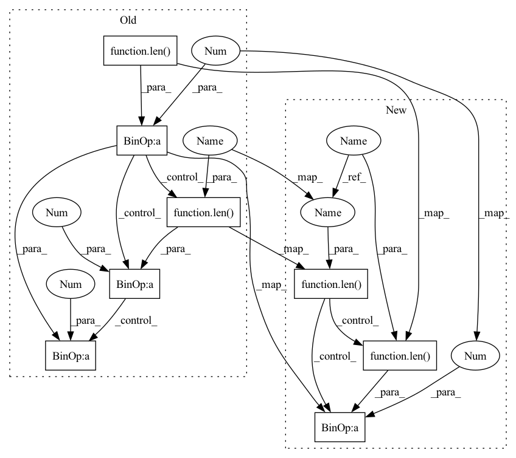

Pattern ID :1509

Before Change
super(Encoder, self).__init__()
layers = []
layer_sizes = [input_size] + layer_sizes + [latent_size]
for l_id in range(len(layer_sizes) - 1):
if l_id == len(layer_sizes) - 2:
layers.append(nn.Sequential(
nn.BatchNorm1d(num_features=layer_sizes[l_id]),
nn.Linear(layer_sizes[l_id], layer_sizes[l_id + 1]),
))
else:
layers.append(nn.Sequential(
After Change
super(Encoder, self).__init__()
self.variational = variational
layers = []
layer_sizes = [input_size] + layer_sizes
for l_id in range(len(layer_sizes)):
if l_id == len(layer_sizes) - 1:
layers.append(nn.Sequential(
nn.Linear(layer_sizes[l_id], output_size),
))
In pattern: SUPERPATTERN
Frequency: 3
Non-data size: 8
Instances
Fragment ID: 2783222
Project Name: jameschapman19/cca_zoo
Commit Name: f3943540d139f5dbea5f842373f5b1d3a167c1ee
Time: 2020-12-11
Author: james.chapman.19@ucl.ac.uk
File Name: cca_zoo/deep_models.py
Class Name: Encoder
Method Name: __init__
Parent Class: nn.Module
Fragment ID: 2783220
Project Name: jameschapman19/cca_zoo
Commit Name: 1e9d1f5f14a2f6788140e0061a279158c7228d41
Time: 2020-12-16
Author: james.chapman.19@ucl.ac.uk
File Name: cca_zoo/deep_models.py
Class Name: CNNEncoder
Method Name: __init__
Parent Class: nn.Module,ABC
Fragment ID: 2783221
Project Name: jameschapman19/cca_zoo
Commit Name: f3943540d139f5dbea5f842373f5b1d3a167c1ee
Time: 2020-12-11
Author: james.chapman.19@ucl.ac.uk
File Name: cca_zoo/deep_models.py
Class Name: Decoder
Method Name: __init__
Parent Class: nn.Module